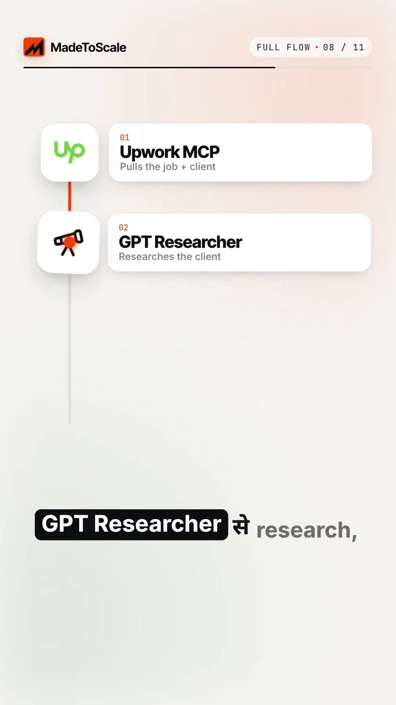
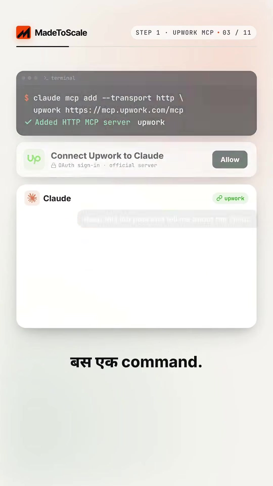
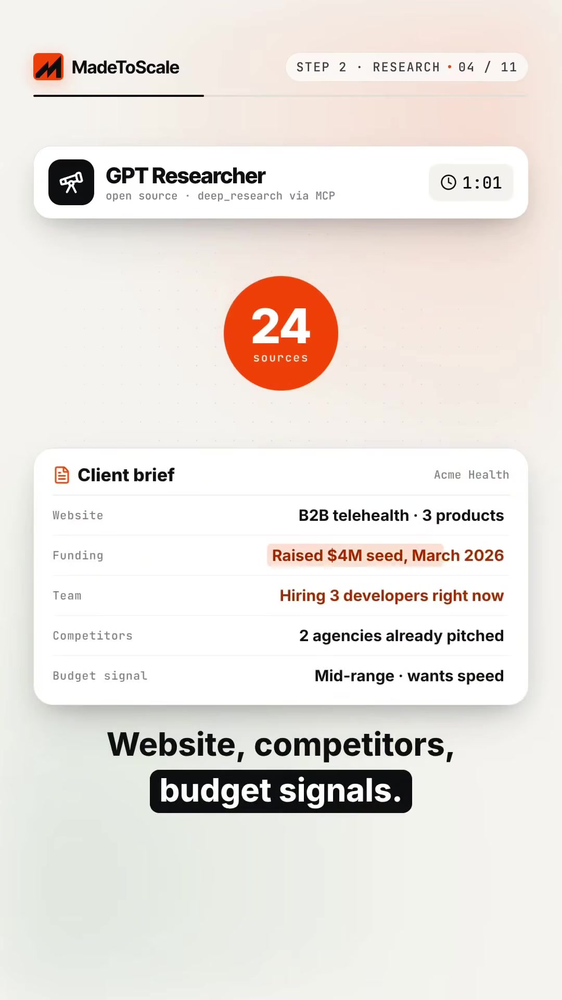
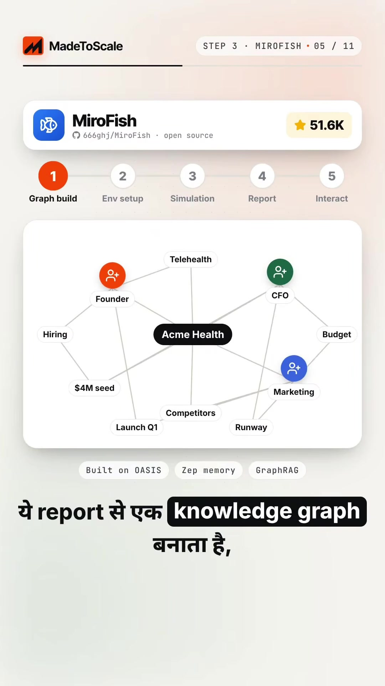
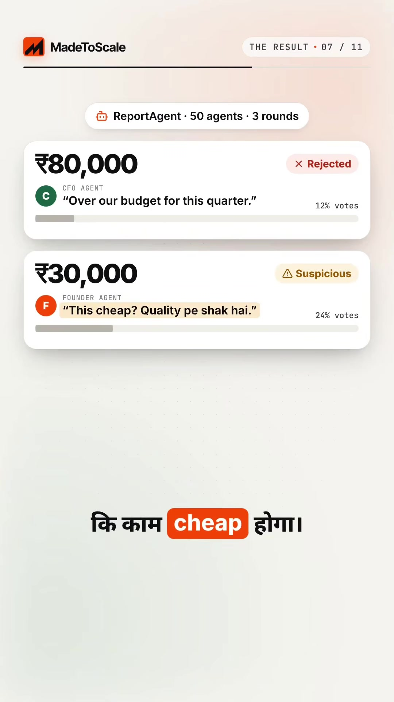

Freelance · Pricing-Strategy
AI Multi-Agent Client Pricing Rehearsal: Upwork MCP, GPT Researcher & MiroFish Simulation
Key Takeaways
- Stop Guessing Freelance Quotes: Guessing quotes creates asymmetric downside: quoting too low (e.g. ₹25,000) raises quality doubts or locks in unprofitable work; quoting too high (e.g. ₹90,000) causes clients to ghost due to budget ceilings.
- The Rehearsal Framework: Instead of guessing, simulate client stakeholder reactions across 50 autonomous AI personas (Founder, CFO, Marketing Lead) testing 3 distinct price tiers.
- Automated Client Ingestion via Upwork MCP: Connect Claude to Upwork via official HTTP MCP to extract verified client spend history, hire rate, location, and job specs automatically.
- Multi-Source Deep Research: Use GPT Researcher across 20+ web sources (Crunchbase, LinkedIn, news, GitHub) to discover unstated budget signals, funding stages, and hiring velocity.
- MiroFish Organizational Simulation: Build an OASIS/GraphRAG-powered organizational graph in MiroFish, running multi-round consensus voting across executive personas to identify the profit-maximizing quote.
The Flaw of Traditional Freelance Pricing
When quoting on custom software, design, or marketing projects, freelancers routinely make uncalibrated guesses.
- Underbidding (≤ ₹30,000): Triggers negative selection heuristics. Serious founders assume low pricing indicates junior skills, outsourced labor, or low technical standards.
- Overbidding (≥ ₹80,000): Hits hard departmental budget ceilings set by finance/CFO gatekeepers, terminating conversations before technical review.
- Calibrated Strike Price (₹55,000): Balances quality credibility with departmental runway, winning consensus approval across all stakeholder archetypes.
The 4-Step Multi-Agent Pricing Pipeline

Step 1: Ingest Client Intelligence via Upwork Official MCP
Connect Claude directly to the Upwork ecosystem using Claude's Model Context Protocol (MCP) transport:
$ claude mcp add --transport http upwork https://mcp.upwork.com/mcp

Claude immediately queries the target job post and parses structured metadata:
- Client Spend History: Total historical spend (e.g. $48,000+ USD).
- Hire Rate & Velocity: 72% hire rate with 31 completed contracts.
- Geography & Timezone: Austin, Texas, US.
- Stated Scope: Next.js dashboard + landing page for health-tech startup.
Step 2: Deep Corporate Background via GPT Researcher
Using GPT Researcher via MCP, run an automated sweep across 24 public data sources (Company Website, Crunchbase, Careers Page, GitHub repos, Reddit, and X).

client-brief.md file in under 2 minutes.
| Signal Field | Extracted Fact | Strategic Pricing Implication |
|---|---|---|
| Recent Funding | Raised $4.0M Seed round (March 2026) | Capital availability is high; not constrained by bootstrapping. |
| Team Expansion | Actively hiring 3 senior developers right now | High opportunity cost; speed to market is prioritized over penny-pinching. |
| Competitor Proposals | 2 external agencies already pitched | Need to differentiate on agility and immediate sprint commencement. |
| Budget Signal | Mid-range enterprise tier; requires rapid delivery | Extreme discount will look suspicious; enterprise premium will require board approval. |
Step 3: Multi-Agent Persona Simulation via MiroFish
The synthesized client-brief.md is ingested into MiroFish (an open-source multi-agent simulation framework built on OASIS, Zep memory, and GraphRAG):

MiroFish instantiates 50 autonomous agent clones divided proportionally:
- 17 Founder Personas: Prioritize shipping speed, product polish, and visionary alignment.
- 17 CFO Personas: Guard runway, enforce quarterly department allocations, and flag cost creep.
- 16 Marketing Personas: Demand aggressive Q1 launch deadlines and high visual conversions.
Step 4: The 3-Tier Price Rehearsal
The simulation subjects all 50 agent personas to 3 rounds of voting across three proposed pricing tiers:

| Proposed Tier | Simulation Vote % | Primary Persona Feedback | Verdict |
|---|---|---|---|
| ₹80,000 (Premium) | 12% Support | "Over our budget for this quarter." — CFO Persona | Rejected: Hard budget barrier. |
| ₹30,000 (Budget) | 24% Support | "This cheap? Quality pe shak hai. Might be junior work." — Founder Persona | Suspicious: Undermines professional credibility. |
| ₹55,000 (Calibrated) | 64% Consensus | "Fair price. Addresses Q1 timeline. Let's start Monday." — Founder & Marketing | Winning Quote: Optimal risk-reward balance. |
Final Proposal Formulation
By pre-simulating stakeholder objections, the freelancer submits the winning ₹55,000 proposal accompanied by defensive assurances addressing both CFO and Marketing concerns:
- Milestone Phasing: 50% upfront, 50% on verified production deployment (satisfies CFO cash flow rules).
- Guaranteed Sprint Velocity: Staged delivery schedule guaranteeing MVP readiness 10 days before the Q1 marketing campaign launch (satisfies Marketing Head).
- Architecture Quality Guarantee: Modern Next.js 16 + TypeScript stack with automated linting and component tests (satisfies Founder quality expectations).
Original Source Reference
Instagram Reel: https://www.instagram.com/reel/DeruXKHNaRy/
Creator: @madetoscale2026 (MadeToScale)
Caption: "Freelancers, price guess karna band karo. Rehearse karo. Client ko quote bhejne se pehle maine apna price 50 AI clients pe test kiya..."